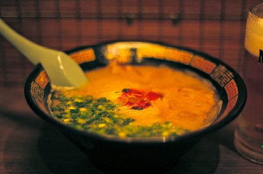
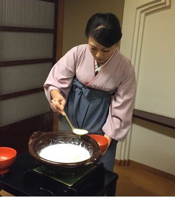

Experience Tokyo Cuisine!
Ichiran Shibuya
A traditional Japanese Ramen restaurant experience, complete with the flavours and décor. A truly authentic Japanese experience that every Tokyo visitor must experience, the ramen here tastes like nowhere else, guaranteed!
Price: 30.00 USD all you can eat per person. Children under 10 dine for 10.00 USD

Hakushu
One of the most famous Japanese grills and barbeques. Delicious Japanese Kobe steaks are served by expert chefs. However, don’t be fooled! This restaurant is family owned and operated, as you will enjoy the traditional Japanese hospitality of this small family run restaurant.
Price: 20.00 USD all you can eat per person. Children dine for free.

Tokyo Shiba Tofuya Ukai
Ever wondered what dining was like in 19th century Japan? Well this restaurant not only serves traditional Japanese cuisine, it is also completely traditionally modeled after old Japanese architecture, and its staff even wear traditional Japanese clothing! Enjoy great food as if you were dining 200 years ago.
Price: 40.00 USD all you can eat per person. Children under 10 dine for 20.00 USD
